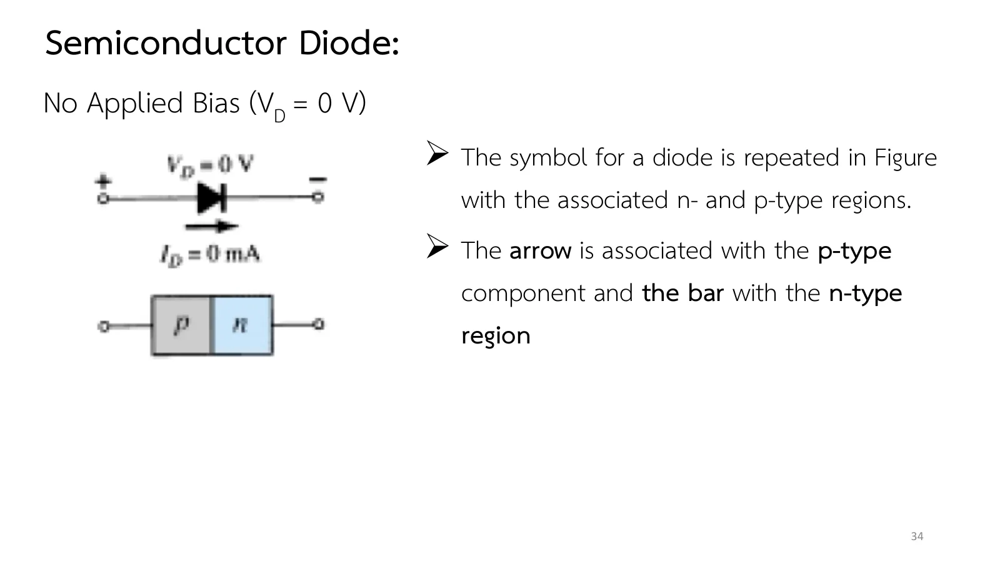

ไดโอดรอยต่อ p–n: ไม่ไบแอส ไบแอสตรง และไบแอสกลับ The p–n junction diode: no bias, forward bias and reverse bias
The p–n junction diode No bias, forward bias and reverse bias
ต่อวัสดุชนิด p กับชนิด n ที่ทำจากซิลิคอนหรือเจอร์เมเนียมเข้าด้วยกันก็ได้ไดโอดสารกึ่งตัวนำ อิเล็กตรอนและโฮลบริเวณรอยต่อรวมกันจนเหลือแต่ไอออนที่ไม่มีพาหะอิสระหักล้างประจุ (uncovered ions) เรียกว่าบริเวณปลอดพาหะ (depletion region) สไลด์หน้า 32–44 ดูไดโอดทั้งสามสภาวะ สมการของช็อกลีย์ ย่านซีเนอร์ ซิลิคอนเทียบกับเจอร์เมเนียม และผลของอุณหภูมิ หน้านี้มีภาพจำลองรอยต่อที่ผูกกับวงจรจริง (ส่วน A) ย่านซีเนอร์และพิกัดแรงดันย้อนกลับ (ส่วน B) โจทย์สามข้อจาก Example 1.1, 1.2 และย่อหน้าเรื่องอุณหภูมิของตำรา และแบบฝึกเพิ่ม
Join p-type and n-type material made from silicon or germanium and you have a semiconductor diode. Electrons and holes near the junction combine until only uncovered ions are left there: the depletion region. Slides pp. 32–44 cover the diode in its three conditions, Shockley's equation, the Zener region, silicon against germanium, and temperature. This page has a junction tied to a live circuit (section A), the Zener region and the peak inverse voltage (section B), three problems from Examples 1.1 and 1.2 and the book's temperature paragraph, and more practice.
ประเด็นสำคัญของหน้านี้
- ไม่ไบแอส (\(V_D = 0\)): พาหะข้างมากที่มีพลังงานพอข้ามรอยต่อได้บ้าง พาหะข้างน้อยที่หลุดเข้าบริเวณปลอดพาหะถูกกวาดข้ามไปอีกฝั่ง สองกระแสหักล้างกันพอดี กระแสสุทธิเป็นศูนย์ (สไลด์หน้า 32–34)
- ไบแอสกลับ (บวกที่ n ลบที่ p): บริเวณปลอดพาหะกว้างขึ้นจนพาหะข้างมากข้ามไม่ได้ เหลือเพียงพาหะข้างน้อย เป็นกระแสอิ่มตัวย้อนกลับ \(I_s\) ซึ่งเล็กมากและแทบไม่เปลี่ยนตามแรงดัน (สไลด์หน้า 35–36)
- ไบแอสตรง (บวกที่ p ลบที่ n): บริเวณปลอดพาหะแคบลงจนพาหะข้างมากไหลข้ามจำนวนมาก กระแสเพิ่มแบบเอกซ์โพเนนเชียลตามสมการ (1.2) แรงดันคร่อมไดโอดที่นำกระแสจึงมักไม่ถึง 1 V และทิศการนำตรงกับหัวลูกศร (สไลด์หน้า 37–40)
- ย่านซีเนอร์และพิกัด PIV: แรงดันย้อนกลับที่มากเกินไปทำให้กระแสย้อนกลับพุ่งขึ้นอย่างฉับพลันที่ \(V_Z\) แรงดันย้อนกลับสูงสุดก่อนถึงย่านนี้คือพิกัด PIV (peak inverse voltage) หรือ PRV (peak reverse voltage) ทั้งสองชื่อหมายถึงแรงดันย้อนกลับสูงสุด (สไลด์หน้า 41–42)
- วัสดุและอุณหภูมิ: เข่าของกราฟอยู่ราว 0.3 V (เจอร์เมเนียม, Ge) 0.7 V (ซิลิคอน, Si) และ 1.2 V (แกลเลียมอาร์เซไนด์, GaAs) เมื่อร้อนขึ้นกราฟของซิลิคอนเลื่อนซ้าย 2.5 mV/°C และกระแสย้อนกลับเพิ่มเป็นสองเท่าทุก 10 °C (สไลด์หน้า 43–44 · ค่าของ GaAs จาก Boylestad ตาราง 1.3 หัวข้อ 1.6)
Key points of this page
- No bias (\(V_D = 0\)): a few majority carriers have the energy to cross the junction, while minority carriers that stray into the depletion region are swept across the other way. The two flows cancel exactly and the net current is zero (slides pp. 32–34).
- Reverse bias (+ on n, − on p): the depletion region widens until the majority carriers cannot cross. Only the minority carriers remain: the reverse saturation current \(I_s\), very small and almost independent of the voltage (slides pp. 35–36).
- Forward bias (+ on p, − on n): the depletion region narrows until majority carriers flood across. The current rises exponentially, Eq. (1.2), so a conducting diode usually has less than 1 V across it, and it conducts in the direction of its arrowhead (slides pp. 37–40).
- The Zener region and the PIV rating: too much reverse voltage makes the reverse current shoot up suddenly at \(V_Z\). The largest reverse voltage before that region is the PIV (peak inverse voltage) or PRV (peak reverse voltage) rating; both names mean the same (slides pp. 41–42).
- Materials and temperature: the knee sits near 0.3 V (germanium, Ge), 0.7 V (silicon, Si) and 1.2 V (gallium arsenide, GaAs). Heating moves a silicon curve 2.5 mV/°C to the left and doubles the reverse current every 10 °C (slides pp. 43–44; the GaAs value from Boylestad Table 1.3, section 1.6).
![Slide 32, Semiconductor Diode: the semiconductor diode is formed by simply bringing these materials together (constructed from the same base, Ge or Si). Quote: This region of uncovered positive and negative ions is called the depletion region due to the depletion of carriers in this region. Since the diode is a two-terminal device, the application of a voltage across its terminals leaves three possibilities: no bias (V_D = 0 V), forward bias (V_D greater than 0 V), reverse bias (V_D less than 0 V). The figure shows a p region with holes and minus ions, an n region with electrons and plus ions, the depletion region of circled ions at the junction, and I_D = 0 mA with V_D = 0 V (no bias).](slides/ch1/p32.webp)

รอยต่อ p–n ภายใต้ไบแอส: ข้างในเกิดอะไรขึ้น
The p–n junction under bias: what happens inside
![Slide 33, Semiconductor Diode, No Applied Bias (V_D = 0 V): a close examination of the figure will reveal that the relative magnitudes of the flow vectors are such that the net flow in either direction is zero. The doping levels for each material may result in an unequal carrier flow of holes and electrons. Quote: In the absence of an applied bias voltage, the net flow of charge in any one direction for a semiconductor diode is zero. The figure shows the p–n junction with its depletion region and I_D = 0 mA at both leads.](slides/ch1/p33.webp)
![Slide 35, Semiconductor Diode, Reverse-Bias Condition (V_D less than 0 V): the number of uncovered positive ions in the depletion region of the n-type material will increase due to the large number of free electrons drawn to the positive potential of the applied voltage. The number of uncovered negative ions will increase in the p-type material. Widening of the depletion region will establish too great a barrier for the majority carriers to overcome, effectively reducing the majority carrier flow to zero. The figure shows a wide depletion region, a battery with its minus side on p and plus side on n, I_s minority-carrier flow and I_majority approximately 0.](slides/ch1/p35.webp)
![Slide 37, Semiconductor Diode, Forward-Bias Condition (V_D greater than 0 V): a forward-bias or on condition is established by applying the positive potential to the p-type material and the negative potential to the n-type material. The application of a forward-bias potential V_D will pressure electrons in the n-type material and holes in the p-type material to recombine with the ions near the boundary and reduce the width of the depletion region. The figure shows a narrow depletion region, a battery with plus on p, I_D = I_majority − I_s.](slides/ch1/p37.webp)
ภาพบนคือรอยต่อ p–n (โฮลคือวงแหวนสีชมพู อิเล็กตรอนคือจุดสีฟ้า ไอออนที่ไม่มีพาหะอิสระหักล้างประจุอยู่ในบริเวณปลอดพาหะสีเหลือง) ภาพล่างคือวงจรจริง แหล่งจ่าย E ต่ออนุกรมกับ R = 1 kΩ และไดโอดซิลิคอนตามสมการ (1.2) (\(I_s = 10\) pA, \(n = 1\), 27 °C, ย่านซีเนอร์ที่ 50 V) พร้อมกราฟลักษณะสมบัติและจุดทำงาน เลื่อน E หรือกดปุ่มสภาวะ แล้วดูความกว้างของบริเวณปลอดพาหะ ลูกศรการไหลของพาหะด้านบน (เขียว: ข้างมาก, ชมพู: ข้างน้อย) และจุดบนกราฟไปพร้อมกัน ความกว้างและจำนวนพาหะในภาพบนเป็นภาพเชิงคุณภาพ ส่วนตัวเลขของวงจรคำนวณจริง
The top picture is the p–n junction (holes are pink rings, electrons cyan dots, and the uncovered ions sit in the yellow depletion region). Below is a real circuit: a source E in series with R = 1 kΩ and a silicon diode obeying Eq. (1.2) (\(I_s = 10\) pA, \(n = 1\), 27 °C, a Zener region at 50 V), with its characteristic and operating point. Move E or press a condition, and watch the width of the depletion region, the carrier-flow arrows on top (green: majority, pink: minority) and the point on the graph together. The width and the carriers of the top picture are qualitative; the circuit's numbers are computed.
![Slide 36, Semiconductor Diode, Reverse-Bias Condition (V_D less than 0 V): the current that exists under reverse-bias conditions is called the reverse saturation current and is represented by I_s. The reverse saturation current is seldom more than a few microamperes except for high-power devices. The term saturation comes from the fact that it reaches its maximum level quickly and does not change significantly with increase in the reverse-bias potential, as shown on the diode characteristics. The figure shows the diode symbol with V_D, plus at the cathode, and I_s flowing against the arrow, above a p–n block marked (Opposite).](slides/ch1/p36.webp)

ย่านซีเนอร์และพิกัดแรงดันย้อนกลับสูงสุด (PIV)
The Zener region and the peak inverse voltage (PIV)
![Slide 41, Semiconductor Diode, Zener Region: in tens of volts in the negative region, there is a point where the application of too negative a voltage will result in a sharp change in the characteristics, as shown in the figure. The current increases at a very rapid rate in a direction opposite to that of the positive voltage region. The reverse-bias potential that results in this dramatic change in characteristics is called the Zener potential and is given the symbol V_Z. The figure shows a diode characteristic with the small reverse current I_s and a steep drop at V_Z on the left, circled as the Zener region.](slides/ch1/p41.webp)
![Slide 42, Semiconductor Diode, Zener Region: the Zener breakdown mechanism is a significant contributor only at lower levels of V_Z; this sharp change in the characteristic at any level is called the Zener region and diodes employing this unique portion of the characteristic of a p-n junction are called Zener diodes. The maximum reverse-bias potential that can be applied before entering the Zener region is called the peak inverse voltage (referred to simply as the PIV rating) or the peak reverse voltage (denoted by PRV rating).](slides/ch1/p42.webp)
ในส่วน A กดปุ่ม "ย่านซีเนอร์" หรือเลื่อน E ลงไปเกิน −50 V: ภาพรอยต่อมีประกายของคู่อิเล็กตรอนกับโฮลที่เกิดใหม่ในบริเวณปลอดพาหะ ตำราอธิบายว่าพาหะข้างน้อยที่ถูกเร่งจนมีพลังงานจลน์สูงชนอะตอมแล้วปลดพาหะใหม่ออกมาเป็นทอด ๆ (avalanche) ส่วนไดโอดที่ \(V_Z\) ต่ำราว 5 V สนามไฟฟ้าแรงที่รอยต่อดึงพาหะออกจากพันธะได้เอง (Zener breakdown) ไม่ว่ากลไกใด เรียกช่วงนี้รวมกันว่าย่านซีเนอร์ แรงดันคร่อมไดโอดแทบคงที่ที่ \(V_Z\) ส่วนเกินของ E ไปตกคร่อม R ไดโอดทั่วไปต้องใช้งานไม่ให้แรงดันย้อนกลับเกินพิกัด PIV ส่วนซีเนอร์ไดโอดตั้งใจใช้ย่านนี้ (บทที่ 2) ตำราระบุว่าแรงดันพังทลายของ Si และ GaAs มักอยู่ระหว่าง 50 V ถึง 1 kV ส่วน Ge ต่ำกว่า 100 V
In section A press "Zener region" or move E below −50 V: sparks appear in the depletion region, new electron–hole pairs. The book explains that minority carriers accelerated to a high kinetic energy knock new carriers loose from atoms, which knock out more (avalanche); in diodes with a low \(V_Z\), around 5 V, the strong field at the junction pulls carriers out of their bonds directly (Zener breakdown). Whatever the mechanism, the region is called the Zener region. The diode voltage stays almost fixed at \(V_Z\) and the rest of E falls across R. An ordinary diode must be used below its PIV rating, while a Zener diode is meant to work here (chapter 2). The book gives breakdown voltages of 50 V to 1 kV for Si and GaAs, under 100 V for Ge.
สมการของช็อกลีย์: \(V_T\) ที่ 27 °C แล้วหา \(I_D\) และ \(V_D\)
Shockley's equation: \(V_T\) at 27 °C, then \(I_D\) and \(V_D\)
![Slide 38, Semiconductor Diode, Forward-Bias Condition (V_D greater than 0 V): as the applied bias increases in magnitude the depletion region will continue to decrease in width until a flood of electrons can pass through the junction, resulting in an exponential rise in current as shown in the forward-bias region of the characteristics. Typically, therefore, the voltage across a forward-biased diode will be less than 1 V. The figure is the silicon diode characteristic on a grid, I_D up to 20 mA, a dashed curve labelled Eq. (1.4) rising near 0.5 V and the actual commercially available unit to its right, and the reverse-bias region down to −40 V with a small negative current.](slides/ch1/p38.webp)
![Slide 39, Semiconductor Diode, Forward-Bias Condition (V_D greater than 0 V): the general characteristics of a semiconductor diode can be defined by the following equation for the forward- and reverse-bias regions: I_D = I_s(e^{kV_D/T_K} − 1), where I_s = reverse saturation current; k = 11,600/η with η = 1 for Ge and η = 2 for Si for relatively low levels of diode current (at or below the knee of the curve) and η = 1 for Ge and Si for higher levels of diode current (in the rapidly increasing section of the curve); T_K = T_C − 273°.](slides/ch1/p39.webp)
(a) จงหาแรงดันความร้อน \(V_T\) ที่ 27 °C (Example 1.1) (b) ไดโอดซิลิคอนมี \(I_s = 10\) pA และ \(n = 1\) จงหา \(I_D\) เมื่อ \(V_D = 0.5\) V (c) จงหา \(V_D\) เมื่อ \(I_D = 10\) mA (d) จงหา \(I_D\) เมื่อ \(V_D = -10\) V
(a) Find the thermal voltage \(V_T\) at 27 °C (Example 1.1). (b) A silicon diode has \(I_s = 10\) pA and \(n = 1\): find \(I_D\) at \(V_D = 0.5\) V. (c) Find \(V_D\) at \(I_D = 10\) mA. (d) Find \(I_D\) at \(V_D = -10\) V.
วงจรในภาพจำลองใช้แหล่งจ่ายแรงดันหรือกระแสกำหนดค่าตามแต่ละข้อ ตัวแก้วงจรใช้สมการ (1.2) ตรง ๆ จึงได้ค่าเดียวกับการคำนวณด้วยมือ ลองตอบก่อน
The circuit in the picture uses a voltage or current source as each part requires. The solver uses Eq. (1.2) itself, so it agrees with the hand calculation. Try it first.
Example 1.2: Ge, Si และ GaAs ที่ 1, 4 และ 30 mA
Example 1.2: Ge, Si and GaAs at 1, 4 and 30 mA

จากกราฟของไดโอด Ge, Si และ GaAs ในท้องตลาด (รูป 1.18 ของตำรา) (a) จงหาแรงดันคร่อมไดโอดแต่ละตัวที่กระแส 1 mA (b) ทำซ้ำที่ 4 mA (c) ทำซ้ำที่ 30 mA (d) จงหาค่าเฉลี่ยของแรงดันของแต่ละวัสดุ (e) ค่าเฉลี่ยเทียบกับแรงดันที่เข่าของกราฟในตาราง 1.3 เป็นอย่างไร
Using the curves of commercial Ge, Si and GaAs diodes (Fig. 1.18 of the book): (a) determine the voltage across each diode at a current of 1 mA; (b) repeat at 4 mA; (c) repeat at 30 mA; (d) find the average voltage of each material; (e) how do the averages compare with the knee voltages of Table 1.3?
ไดโอดทั้งสามได้กระแสเท่ากันจากแหล่งจ่ายกระแสของตัวเอง เส้นโค้งในภาพจำลองผ่านค่าที่ตำราอ่านได้ทุกจุด ลองตอบก่อน
Each diode gets the same current from its own current source. The simulated curves pass through every value the book reads. Try it first.
ผลของอุณหภูมิ: จาก 20 °C เป็น 100 °C
Temperature: from 20 °C to 100 °C

ไดโอดซิลิคอนที่อุณหภูมิห้อง 20 °C มี \(V_D = 0.7\) V เมื่อ \(I_D = 10\) mA และมีกระแสย้อนกลับ 10 nA จงหา \(V_D\) ที่กระแสเท่าเดิมและกระแสย้อนกลับ เมื่ออุณหภูมิเพิ่มเป็น 100 °C (จุดเดือดของน้ำ) ใช้กฎของตำรา: กราฟเลื่อนซ้าย 2.5 mV ต่อ °C และกระแสย้อนกลับเพิ่มเป็นสองเท่าทุก 10 °C
At room temperature, 20 °C, a silicon diode has \(V_D = 0.7\) V at \(I_D = 10\) mA and a reverse current of 10 nA. Find \(V_D\) at the same current, and the reverse current, at 100 °C (the boiling point of water). Use the book's rules: the curve moves 2.5 mV to the left per °C, and the reverse current doubles for every 10 °C.
ไดโอดในภาพจำลองสร้างตามกฎสองข้อนี้ ขั้นที่ 2 เปลี่ยนไดโอดเป็นตัวที่ 100 °C ลองตอบก่อน
The simulated diode is built from these two rules; step 2 swaps in the diode at 100 °C. Try it first.
ฝึกเพิ่ม
More practice
ลองทำดู 1 — สามสภาวะ
- ส่วน A กด "ไม่ไบแอส": ลูกศรเขียวกับชมพูยาวเท่ากัน กระแสสุทธิเป็นศูนย์ แต่พาหะยังเคลื่อนที่อยู่ตลอด
- กด "ไบแอสกลับ": บริเวณปลอดพาหะกว้างขึ้น ลูกศรเขียวหายไป เหลือลูกศรชมพู กระแสคือ \(-I_s = -10\) pA ไม่ว่า E จะเป็น −5 V หรือ −40 V
- กด "ไบแอสตรง" แล้วเลื่อน E ขึ้นช้า ๆ: บริเวณปลอดพาหะแคบลง ลูกศรเขียวยาวขึ้น ส่วน \(V_D\) อยู่แถว 0.5 V (สูงสุด 0.535 V ที่ E = 10 V) แม้กระแสจะเพิ่มมาก
ลองทำดู 2 — สมการและวัสดุ
- ข้อ 1: ลองใช้ \(V_T = 26\) mV แทน 25.875 mV แล้วดูว่ากระแสที่ 0.5 V เปลี่ยนไปเท่าไร
- ข้อ 2: ที่กระแสเดียวกัน เส้นโค้งของ Ge, Si และ GaAs ห่างกันราว 0.4–0.5 V เรียงตามช่องว่างแถบพลังงาน \(E_g\) ของแต่ละวัสดุ (หน้า 1.2)
- ข้อ 3: ไดโอดร้อนขึ้นนำกระแสง่ายขึ้นที่แรงดันเท่าเดิม เป็นเหตุให้วงจรที่ไม่ออกแบบเผื่อไว้ร้อนยิ่งขึ้นได้
Try this 1 — the three conditions
- In section A press "No bias": the green and pink arrows are equally long; the net current is zero, but the carriers never stop moving.
- Press "Reverse bias": the depletion region widens, the green arrow vanishes and only the pink one is left. The current is \(-I_s = -10\) pA whether E is −5 V or −40 V.
- Press "Forward bias" and raise E slowly: the depletion region narrows and the green arrow grows, while \(V_D\) stays near 0.5 V (at most 0.535 V at E = 10 V) however large the current gets.
Try this 2 — the equation and the materials
- Problem 1: put \(V_T = 26\) mV instead of 25.875 mV and see how much the current at 0.5 V changes.
- Problem 2: at the same current the Ge, Si and GaAs curves are some 0.4–0.5 V apart, in the order of their band gaps \(E_g\) (page 1.2).
- Problem 3: a hotter diode conducts more easily at the same voltage, which can make a circuit not designed for it heat up even more.